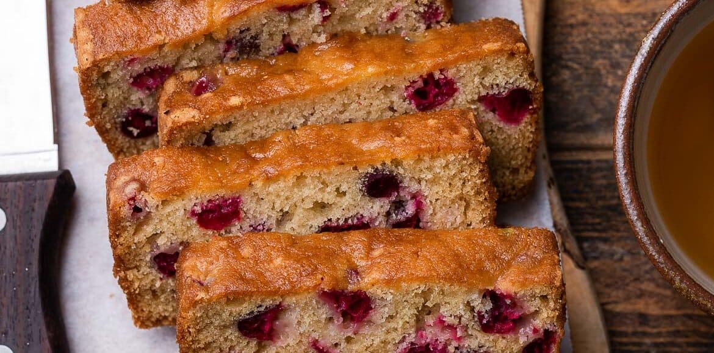

Hobbit Tea Cake

Description:
Hunting down recipes to impress your guests sometimes seems like a trek across Middle Earth. Luckily for you, we searched all the realms far and wide to bring you this easy and tasty treat that anyone simply shall not pass up.
Whether you're ramping up for second breakfast at the shire, or having a
quaint get-together with friends, this Hobbit Tea Cake is one treat to
rule them all.
Serves 6 - 8
Ingredients:
- Zest of 1 lemon
- 3/4 cup unsalted butter
- 1 cup sugar
- 21/4 cups all-purpose flour
- 1 tsp baking powder
- 1 tsp salt
- 1/2 cup dried cranberries
- Juice of 1 lemon
Directions:
- Preheat oven to 350°F
- Mix together all dry ingredients
- In a separate bowl, mix together butter, sugar, and zest until smooth
- Add eggs, one at a time, to the butter mixture, beating well each time
- Fold in dry ingredients and lemon juice and mix well
- Spoon mixture into greased loaf pan and bake at for 30-45min or until golden.
- Wrap and chill overnight before serving